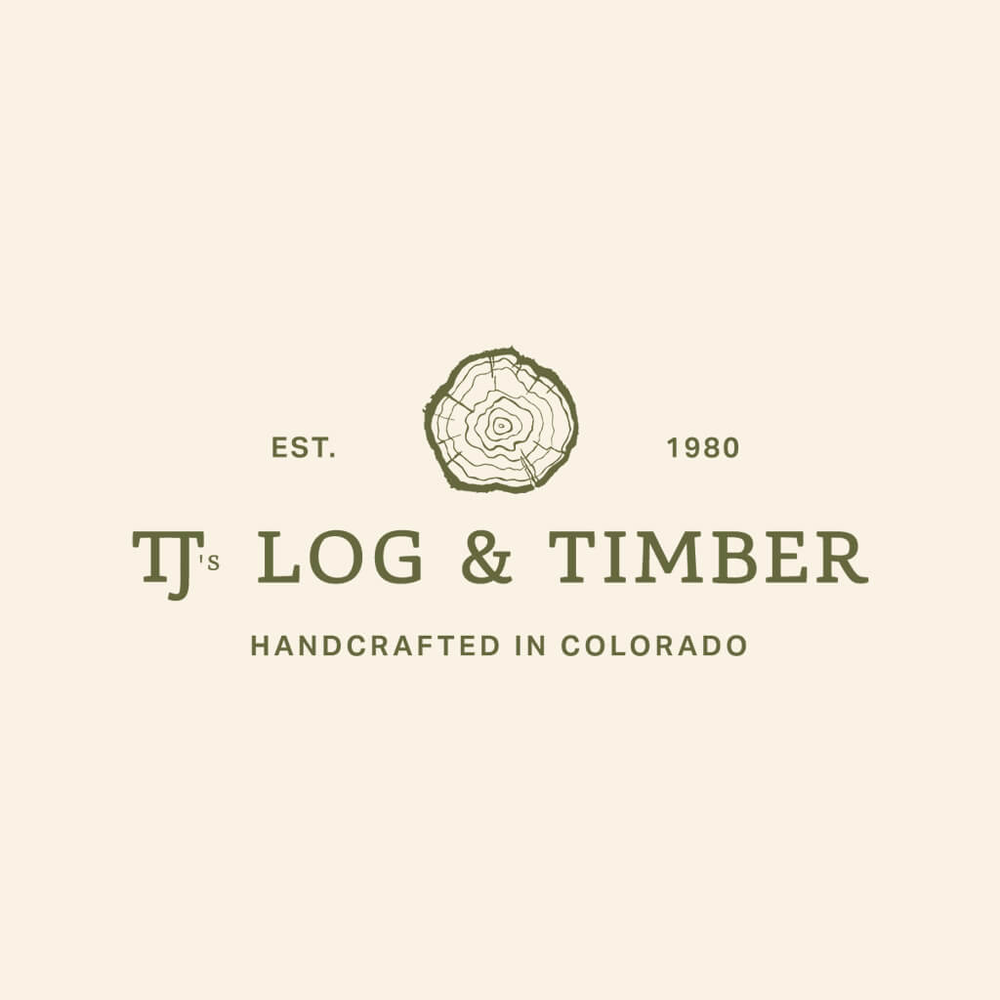

TJ's Log & TimberShareholder Update
Stan Bullis · August 17, 2026
Shareholders,
We walked the TJ's Log & Timber site last week. I left with two feelings at the same time: real optimism about the business, and real disappointment in how we receive people.
The place feels like it is planning its death, not planning to be prosperous. That is a hospitality problem, and hospitality is a leadership problem.
Drive in and the first impression is not warm, not inviting, and not first class. There is a random grill on the front porch. The shrubs are overgrown. There are weeds in the driveway. Nothing about arrival says we care.
Inside, the office is unkempt. Plans and drawings are sitting out without organization. The comfort room needs to be cleaned up and upgraded. The conference room needs an upgrade and has no real technology. The offices look messy. They do not exude confidence. Upstairs is a wonderful space, both sides, and it is littered with thousands of dead flies. It does not look like anyone has been up there in years.
Leadership told us they get about five to ten walk-ins a day. If that is true, what are we doing when someone walks in? Are we dressed for it? Do we offer water or coffee? Does the building smell clean? Are the bathrooms in the condition we would want for our own family? Should we offer a beer or a glass of wine while people make a decision this big?
That question runs into hours. Most people looking at log homes will stop on a Friday, Saturday, or Sunday. We should re-examine whether Monday through Thursday is the right week, or whether Tuesday through Saturday serves the customer better. Whatever hours we land on should be on a roadside sign, with walk-ins welcome, so a drive-by does not have to guess.
I also want to ask a hard question about the archive. We have years of builds. Somewhere we have architectural plans. They are not cataloged. We need them cataloged. Which models have a full set? Which jobs from the last six years are still sitting on paper in a drawer? Until we know that, we cannot sell with any confidence. That includes sitting down with our engineer and confirming which sets are actually complete, not a floor plan and a marketing elevation.
Walk-ins also need a way to see every model we actually offer. A book they can hold, and a simple slide-through of imagery, TV or screen, so a customer can walk the lineup without us hunting through piles. Sitting in that sales conversation, it was obvious we do not have this. We felt it. The customer would feel it too.
That is the list we cataloged while we walked: the entrance, the grill, the shrubs, the weeds, the comfort room, the offices, the conference room, the upstairs, the hours on the road, the plan archive, and a book and screen of the models. None of it is mysterious. It is just unfinished.
The sawmill was a pleasant surprise. It is cleaned up, functional, and organized. It makes sense. I believe that was the landowner's request, and the crew delivered. I want those guys called out. The office should look just as good as the mill.
Colorado Base Camp also left me encouraged. The smaller, hotel-style cabins made me wonder whether we should be building product we can rent ourselves, since we already operate a hospitality brand. There is a real business in front of us if we treat it that way.
Employee morale felt down. Same feeling as the building: planning to die, not planning to thrive. There is a general underlying fear, and that is the most concerning thing I saw. These are skilled people. We cannot afford to lose them. They need a clear assurance that their jobs will be protected.
That is on leadership. Not on the crew.
I met with the Parkers this weekend. They have declined a staffed sales office. Two reasons: the money and the term are not enough, and they are not salespeople. They felt uncomfortable in that role. I am fine taking the model cabin back and reassembling it on my property with a sign and a phone number, and simply leaving it as an unmanned sales office through the winter and into next summer. It does not need to sit at the Parkers' house.
I have concerns about Jason Bowen's cabin being finished and stacked by the end of September. Progress looks stalled. Two courses on the second floor is not where I expected us to be. I know we diverted labor to get cash flow on another cabin. I want a leadership update on timing, and I want Jason to have a real assurance that we can still stack it by the end of September.
There is a capital call coming. I feel some optimism about the strategy, the mill, and what we could still become. As an investor, I feel disappointed in our ability to create a place people walk into and want to buy. Jonathan Wield, Jim Huber, and I are talking about not arbitrarily injecting cash into a winter with no revenue. One idea is to build the shell cabin for Mary Drive in Grand Lake, drop the foundation in the spring, assemble it, and sell it. The cash goes into a product, not just a hole.
Part of that tug is personal. I am going to look hard at whether I can be at TJ's once a week. It is a tall ask. I also think more optimism and more leadership on the ground would stabilize the operation.
I am optimistic about the business and the opportunity. I appreciated seeing what is possible. I am not optimistic about the attention to detail around the office, or about how we deliver hospitality to a new customer. We are not creating raving fans right now.
Fix the face of the building. Fix how we receive people. Give the crew a reason to believe we are staying. Then the next dollar we put in should build something we can sell.
Respectfully,
Stan Bullis
Founder, Unbridled Companies